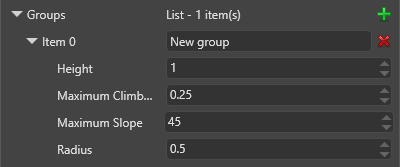

Navigation groups
Warning
Приносим свои извинения за неудобства. Для этой страницы нет перевода на русский язык. Она будет отображаться на английском языке.
Beginner Level designer Programmer
Navigation groups define different navigation properties for the entities you add to them. You define navigation groups in the project game settings.
You can create different navigation groups for different kinds of entity. For example, if your game features vehicles controlled by scripts, you might create different navigation groups for different sizes of vehicle, each with different properties: a car group, a bus group, a motorcycle group, and so on.
Create a navigation group
In the Solution Explorer (the bottom-left pane by default), select the Assets folder.

In the Asset View (the bottom pane by default), select the Game Settings asset.

In the Property Grid (the right-hand pane by default), expand Navigation Settings.

Next to Groups, click
 (Add).
(Add).Game Studio adds a new item to the list of navigation groups.

Set the properties for the navigation group. Entities you add to this group use these properties.
Navigation group properties
In most cases, the navigation group properties should approximately match the properties in the character component of the entities in the group, if they have one.
| Property | Description |
|---|---|
| Item | The name of the group |
| Height | The height of the entities in this group. Entities can't enter areas with ceilings lower than this value |
| Maximum climb height | The maximum height that entities in this group can climb |
| Maximum slope | The maximum incline (in degrees) that entities in this group can climb. Entities can't go up or down slopes higher than this value. In most cases, this should be approximately the same value as the max slope property in the character component of the entities in this group, if they have one. |
| Radius | The larger this value, the larger the area of the navigation mesh entities use. Entities can't pass through gaps of less than twice the radius. |